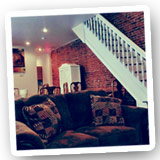

Together, we can do what we can’t do apart––The Haven at Drexel was born from this notion. As a peer-led residential community, we identify with each other’s challenges, and help each other navigate early recovery while succeeding in college. We offer recovery support services, live-in staff, and social activities for students who are committed to staying in school while learning to lead a sober lifestyle. By sticking together, we keep the college experience fun, safe, and supportive––clean and sober.
Comfortable and convenient, The Haven at Drexel is located in the heart of University City in a furnished, corner row house just a few blocks from campus. Haven residents share bedrooms with same-sex roommates, supporting each other’s recovery while forming lasting friendships.
Our Program Director (who also serves as our Recovery Coach) helps our residents develop and review individualized wellness plans during weekly one-on-one meetings. These plans encourage our students to balance their recovery, academic work, and social life. We also encourage attendance and participation in 12-step meetings (or other modalities). Our live-in House Managers, provide peer support, facilitate weekly community meetings, and organize group activities that include camping trips and service projects.
They also administer routine drug tests to keep The Haven safe and to ensure early intervention in the event of relapse. The Haven at Drexel also extends support to the entire family of each resident. Through monthly conferences with our Program Director, process groups and workshops for parents, and activities and programs during Drexel Family Weekend, we involve our students' loved ones in their recovery.
“I have been given such a rare opportunity at a young age to be a part of a recovery community. I am passionate about creating that same opportunity for other young people. The Haven is giving people my age the chance to get a higher education and stay happy, healthy and sober. At The Haven we provide support and love to anyone who reaches out, and we have a ton of fun doing it!”
--Former Haven Resident, Drexel Freshman
“I really need to bounce [my] life off of other people, to know that I’m not alone. It’s hard being surrounded by a college environment that encourages alcohol consumption. I still miss that nightlife, and I know I can’t live with friends who consume alcohol and engage in other behaviors. I love living at The Haven with people who have the same challenges I do. I’m doing better in school than I ever have!”
--Former Haven Resident, Senior
“The Haven taught me to love myself. You taught me to take responsibility for my actions. You taught me to acknowledge that I was affecting the people I loved the most with my addiction, but that I could do something to change that. You showed me that I am my own worst enemy, but that I am also the creator of my destiny.”
--Former Haven Resident
“During the past Christmas, we remembered where we were as a family a year ago … we feel very grateful for how incredibly far our son has come. I know The Haven played a major role in helping him accomplish this remarkable turnaround, and he, above all, is reaping the benefits. Thank you for your vision, hard work, and humanity in support of talented young people."
--Parent of Former Resident
“The Haven is aptly named. The people here are knowledgeable, compassionate, insightful, and generous. They understand the struggles of bright, young adults trying to move forward from substance abuse to success, anticipating their struggles and meeting their needs in ways that are uncanny. There's no road map to finding the ideal environment for someone working toward recovery. If you have found The Haven, leap at this opportunity! Tell others about it! There is no safer, better choice out there.”
--Parent of Former Resident
“The Haven provides a wonderful new resource, with a proven set of programs, for our students in recovery or for those who are starting to get sober. We are happy to work with The Haven to see it expand its reach to help students become educated about recovery as well as breaking down the stigma associated with addiction.”
--John Watson, Drexel Assistant Director of Counseling and Director of Alcohol, Other Drug and Health Education